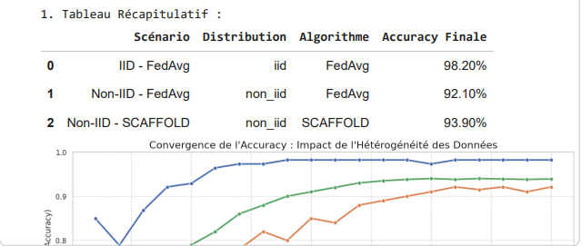
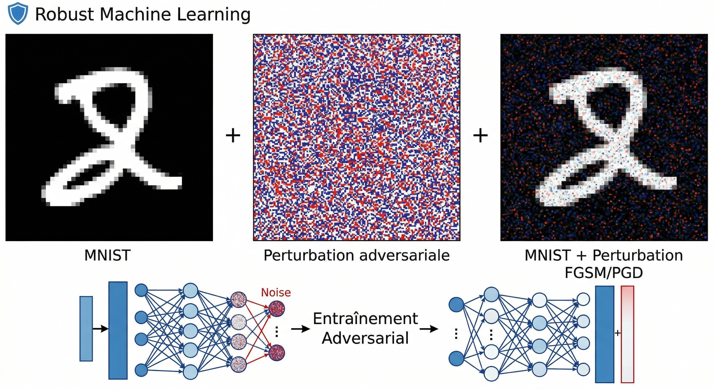
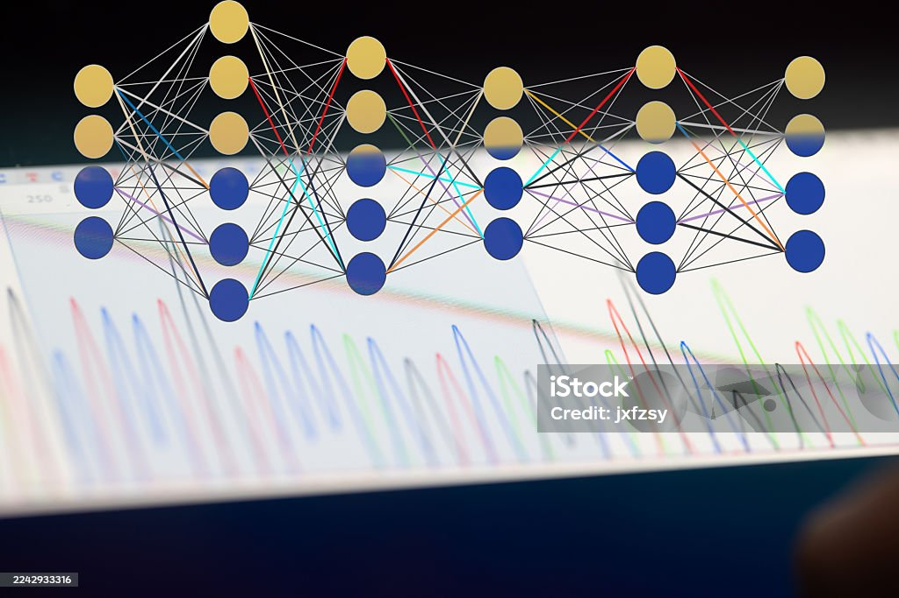

Projets Data Science & IA

🔐 Apprentissage Fédéré Sécurisé (Privacy-Preserving AI)
Technologies:
Système d'IA décentralisé pour le diagnostic du cancer du sein simulant la collaboration entre hôpitaux sans échange de données brutes.
- ✓ SCAFFOLD: Correction du Client Drift (92% → 94% accuracy)
- ✓ Differential Privacy: Protection des données médicales via bruit gaussien
- ✓ Fairness: Analyse et mitigation des biais algorithmiques

🛡️ Robust Machine Learning (MoM & Adversarial Training)
Technologies:
Implémentation d'estimateurs robustes et défense de réseaux de neurones contre les attaques adversariales (MNIST).
- ✓ Statistique Robuste : Estimateur Median of Means (MoM) pour contrer les valeurs aberrantes (outliers)
- ✓ Attaques : Création d'attaques FGSM (Fast Gradient Sign Method) et PGD-40 (Projected Gradient Descent)
- ✓ Défense : Adversarial Training PGD permettant de gagner +65 points de robustesse

🖼️ XAI Vision : Grad-CAM sur ResNet50
Technologies:
Visualisation et interprétabilité des décisions d'un CNN profond via les cartes d'activation de classe.
- ✓ Algorithmique : Extraction du gradient des activations pour générer des heatmaps explicatives
- ✓ Diagnostic : Localisation des zones discriminantes (museau, pelage) ayant influencé le modèle
- ✓ Analyse multi-couches : Comparaison de l'évolution de la granularité sémantique entre les couches du ResNet50

💬 XAI NLP : Integrated Gradients sur DistilBERT
Technologies:
Interprétation de modèles de langage massifs (LLM) appliqués à une tâche de Question-Answering sur le climat.
- ✓ Integrated Gradients : Attribution de pertinence à chaque token via l'approximation d'intégrales
- ✓ Analyse d'Attention : Démonstration de l'influence des tokens de la question sur la recherche dans le contexte
- ✓ Validation : Vérification de la propriété de complétude (delta < 0.05)

⚕️ XAI Santé : SHAP & Contrefactuels (DiCE)
Technologies:
Explicabilité de modèles de Machine Learning tabulaires pour la prédiction de survie (Titanic) et le diagnostic de maladies cardiaques.
- ✓ Théorie des Jeux (SHAP) : Quantification de l'impact marginal de chaque variable clinique (Sexe, Classe, Âge)
- ✓ DiCE (Contrefactuels) : Génération de recommandations actionnables pour modifier le diagnostic d'un patient
- ✓ Fiabilité Clinique : Distinction entre "pourquoi cette prédiction" et "comment changer la situation"

🕸️ XAI Graphes : Layer-wise Relevance Propagation (GNN)
Technologies:
Adaptation de la méthode de propagation de la pertinence (LRP) aux Graph Neural Networks sur des réseaux sociaux (Karate Club).
- ✓ Décomposition par Walks : Identification des "chemins de messagerie" les plus influents dans le graphe
- ✓ GNN-LRP : Extraction d'une explication structurelle topologique sans dépendre uniquement des features
- ✓ Réseaux Denses : Utilisation de LRP-ε et LRP-γ pour le diagnostic du cancer du sein (FC Networks)

🔬 Problèmes Inverses : Algorithme TwIST (Restauration d'images)
Technologies:
Résolution de problèmes inverses mal posés (déconvolution d'images bruitées) via des méthodes d'optimisation avancées.
- ✓ Modélisation Mathématique : Minimisation de fonctionnelles pénalisées (Forward-Backward)
- ✓ TwIST : Implémentation du Two-Step Iterative Shrinkage/Thresholding pour accélérer drastiquement la convergence
- ✓ DeepInverse : Intégration algorithmique pour la restauration d'images floues soumises à un bruit gaussien
💹 Trading Algorithmique Multi-Modal & IA
Technologies:
Robot de trading avancé combinant analyse technique multi-timeframes, Deep Learning sur graphes et gestion du risque Wall Street.
- ✓ Deep Learning: Graph Attention Networks (GAT) pour l'analyse de marché
- ✓ Meta-Modèle: Stacking (XGBoost, GBR, Régression Linéaire)
- ✓ Fiabilité: Backtesting financier et intégration API Deriv/MT5
🌍 Démographie, Épidémiologie & Santé Publique
- Stata
- SPSS
Technologies:
Traitement de bases de données massives (EDS Burkina Faso / Mali) pour l'analyse des comportements de santé et de la mortalité.
- ✓ Statistiques avancées: Analyse Multi-niveaux, Régression Logistique Multinomiale
- ✓ Démographie: Calcul de l'Indice Synthétique de Fécondité, quotients de mortalité (Coale et Demeny)
- ✓ Méthodologie: Plans de sondage complexes (pondérations, effets de grappe), Suivi & Évaluation (M&E)

🎲 Statistiques Bayésiennes & Inférence MCMC
Technologies:
Quantification de l'incertitude et modélisation de la fiabilité (durée de vie) par approche probabiliste.
- ✓ Algorithmique: Implémentation de l'algorithme Metropolis-Hastings (MCMC) "from scratch"
- ✓ Modélisation: Loi de Weibull et modélisation prédictive avec la librairie PyMC3
- ✓ Validation: Calcul des intervalles de crédibilité à 95% et analyse de convergence des chaînes de Markov